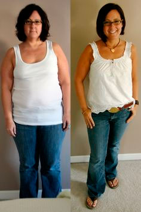
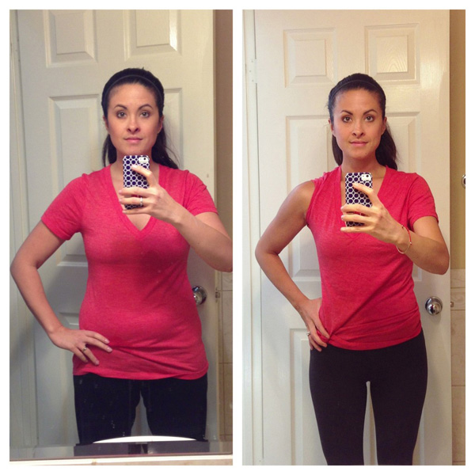
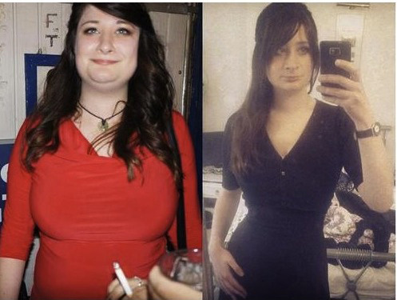
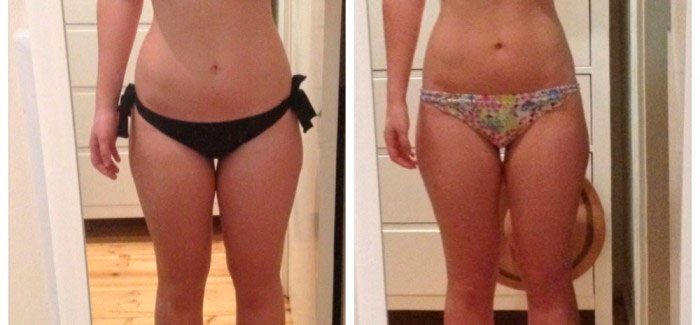
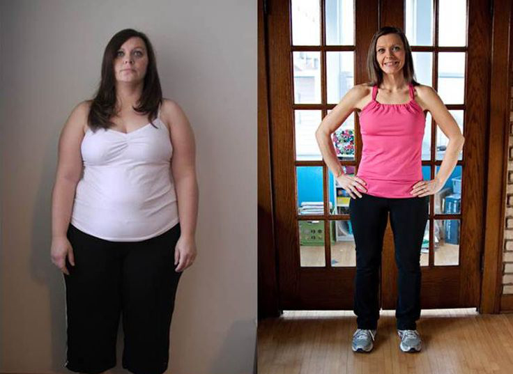
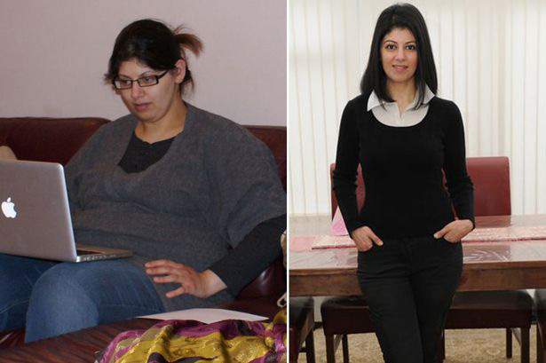
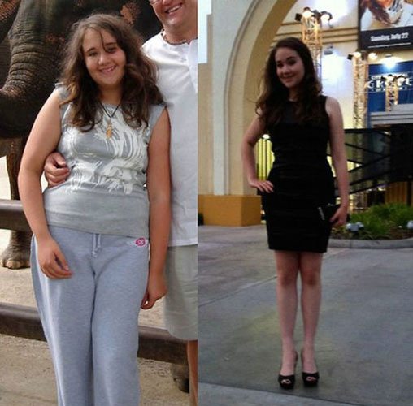
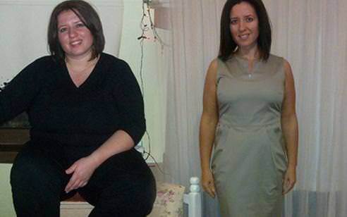
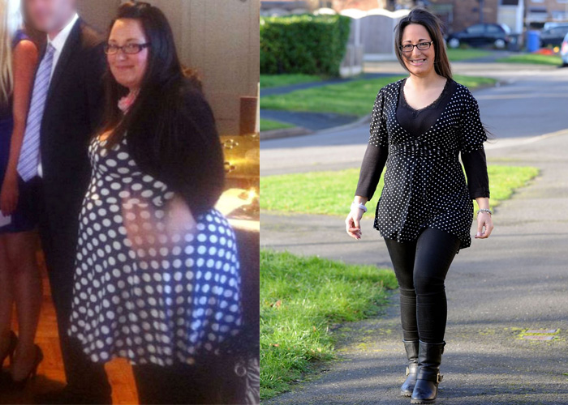

Wie ich es von 98 auf nur 56 kg in nur 31 Tagen geschafft habe?
Hallo Leute! Jedem ist aufgefallen, dass ich viel abgenommen habe und so bin ich mit Fragen bombardiert worden. Ich habe alles gegeben, um alle Fragen zu beantworten und euch allen gerecht zu werden, aber bin gescheitert - wenn ich so viele Nachrichten beantworten will, muss ich online leben. Also habe ich beschlossen, diesen Post zu schreiben, um folgende Frage zu beantworten: "Wie hast du es geschafft, 42 kg abzunehmen?" (Das heißt nicht, dass ihr mir nicht schreiben oder mir Fragen schicken sollt, es macht mein Leben nur einfacher).
Für meine Verwandlung habe ich nur DREI MONATE gebraucht! TOLLES ERGEBNIS, NICHT WAHR?
Hintergrund
Ich war noch nie schlank, aber mir ist aufgefallen, dass ich immer mehr zunahm. Mein Bauch hat sich dreimal überlappt, ich sah aus wie eine Bulldogge im Bikini. Meine Hüften, Beine und mein Hintern sind immer größer und größer geworden! Ich habe beschlossen, komme was wolle, fit zu werden und einen gesunden Körper zu bekommen. Also habe ich aufgehört, Fettiges und Gebratenes zu essen und mich von meinen herzhaften, späten Mahlzeiten verabschiedet. Ich bin morgens Joggen gegangen und habe die Abende im Fitnessstudio verbracht. Aber anstatt abzunehmen, habe ich immer mehr zugelegt! Nach einem Monat hat mein Gewicht die erschreckende Marke von 98 Kilos geknackt. Ich habe meine Ernährung noch mehr eingeschränkt, und auf Fleisch, Brot, Pommes und Süßigkeiten verzichtet. Schließlich habe ich mich nur noch von Obst, Gemüse und Wasser ernährt. Ich habe ein paar furchtbar teure Abnehm-Tees und Pillen ausprobiert, aber nichts hat geholfen. Nach einer gewissen Zeit kamen die verlorenen Kilos immer wieder zu meinem erschöpften Körper zurück.
Weder Diäten, noch Pillen helfen, das ist alles Abzocke!
Nur Sport zu treiben ist zu anstrengend und es dauert zu lange, bis man Ergebnisse sieht. Was sollte ich also tun?
Nach haufenweise Diäten, Pillen, Stunden im Fitnessstudio und tausenden von Euros für persönliche Fitnesstrainer ausgegeben habe, habe ich schließlich das Handtuch geworfen. Eines Tages bin ich in einem Artikel über Zitrischlank gestolpert und wollte es ausprobieren. Natürlich bin ich skeptisch gewesen. Aber nachdem ich alles probiert habe und wirklich frustriert war, hatte ich keine andere Wahl! Außerdem habe ich mir die Bewertungen angesehen und diese waren wirklich beeindruckend!
Laut mehrerer Studien haben dank Zitrischlank die Versuchspersonen nicht nur ihre Pfunde verloren. Ihr Stoffwechsel hat sich außerdem extrem verbessert und ihre Körper sind alles in allem gesünder geworden. Das Ganze hat nur 3 Monate gedauert.
Also stand es fest! Ich bin auf die Webseite gegangen, habe alles nochmal überprüft und Zitrischlank bestellt. Es ist innerhalb von zwei Tagen angekommen inklusive kostenlosem Abnehmprogramm mit Diät- und Fitnesstips und ein Gratisgeschenk. Was es ist, das verrate ich hier nicht. Ansonsten ist es ja keine Überraschung mehr. ;) Ich habe die Anweisungen gelesen und angefangen, ZitriSchlank in einer Dosis von jeweils zwei Kapseln jeden Tag zu nehmen.
Ergebnisse!
Nach nur drei Wochen, sind die Ergebnisse unfassbar gewesen - ich habe 25 kg abgenommen! Keine Schwellungen mehr und mein Teint ist viel besser geworden! Hüften und Bauch sind merklich schmaler - und meine Laune besser! Ich habe angefangen zu glauben, ich kann wieder schön werden. Trotzdem habe ich natürlich weiterhin Sport getrieben und auf meine Ernährung geachtet.
Greenleaves Vitamins betont das extra. Ein weiterer Punkt, der mich überzeugt hat, dass es sich hier nicht um irgendwelche Geldmacherei auf dem Rücken der Menschen mit Gewichtsproblemen handelt. Den holländischen Familienbetrieb gibt es schon seit fast 25 Jahren. Angefangen hat alles in einer Garage und heute hat die Familie ein Firmengelände von 1.000 Quadratmetern. Nachdem ich das alles herausgefunden hatte, stand für mich fest: Wer so lange und erfolgreich im Geschäft ist, der muss vertrauenswürdig sein.
Am Ende der vierten Woche habe ich weitere 17 kg verloren! Ich bin immer fitter geworden und darum habe ich die Treppe genommen, statt des Aufzugs. Aus hartem Training ist plötzlich ein einfaches Vergnügen geworden! Ich kann nicht glauben, dass das passiert ist, nur weil ich diese einfachen Zitrischlank Anweisungen befolgt habe! Wenn ich es schaffe - kannst auch du ähnliche Ergebnisse mit ZitriSchlank erzielen! Vier Wochen sind wie im Flug vergangen und meine Kilos sind wie weggeblasen!
Ich habe mein Ziel innerhalb von 31 Tagen erreicht. Mein Bauch ist weg, ich habe 42 kg abgenommen und plötzlich einen Körper, von dem ich nicht mal zu träumen gewagt habe!
Übrigens haben verschiedene US Wissenschaftler Zitrischlank, bzw. den Wirkstoff Sinetrol®, 2013 und 2015 getestet. Der Bericht ist auf der Seite der US National Library of Medicine National Institutes of Health veröffentlicht. Die medizinische Studie bestätigt, dass die Versuchspersonen über 5% Taillen- und sogar fast 10% Hüftumfang verloren haben. Bei der anderen Gruppe, die nur Plazeboprodukte bekommen hat, hat es kaum Unterschiede gegeben.
Grund dafür ist der Wirkstoff Sinetrol®. Das ist eine Kombination aus Guaranabeeren und natürlichen Zitrusextrakten, wie z.B. Grapefruit, Orangen usw. Guarana kurbelt deine Fettverbrennung an. Aber keine Angst, die tägliche Dosis in den Kapseln ist nicht höher als eine Tasse Kaffee. Die Zitrusfrüchte haben nicht nur C und jede Menge B Vitamine. Sie helfen auch, weil sie sogenannte Polyphenole und Flavanone enthalten. Diese Stoffe sorgen dafür, dass du abnimmst.
Jeder, der mit ZitriSchlank abgenommen hat, ich bitte euch, teilt mir eure Ergebnisse jetzt und hier mit! Ihr könnt dabei helfen, auch andere davon zu überzeugen, dass es wirklich hilft! Danke!
Hey! Ich habe tolle Nachrichten! Vertreter des Zitrischlank Unternehmens haben mich kontaktiert, um mir
Liebe Marion, vielen Dank, dass du mich dazu angeregt hast, endlich diese furchtbaren Kilos loszuwerden. Drei Wochen sind nur vergangen und ich habe 12 kg abgenommen. Ich bin nun bei 62 kg, und wie du versprochen hast, schwangt das Gewicht nicht. Alles Gute, Katrin.
Ich habe lange von einem schlanken Körper geträumt, und habe auf dieser Seite von Zitrischlank vor drei Monaten erfahren. Ich habe gezögert, eine Bestellung aufzugeben, aber wurde von meiner Mutter überzeugt. Es ist nicht viel Geld, das man ausgibt, damit ein Traum in Erfüllung geht! Jetzt nehmen wir gemeinsam ab. Sie hat jedoch mehr Erfolg als ich =(
Ich bin so froh, dass ich diesen Blog gefunden habe. Werde mit Sicherheit die Zitrischlank Ernährungsergänzung ausprobieren.
Hey Marion! Ich bin deinem Ratschlag gefolgt und habe Zitrischlank ausprobiert und nun ja...im weitem Sinne hast du meine Familie und meine Ehe gerettet =) Mary, du bist eine unglaubliche Frau! Mein Mann geht jetzt völlig anders mit mir um, ich bin selbstbewusster geworden...ich fühle mich TOLL! =)
Hey Ladies, ich trete bald dem schlanken Team bei! Habe gerade meinen Zitrischlank bekommen! Danke, dass ihr eure Ergebnisse geteilt habt, sie haben mich dazu motiviert, diesen Weg zu gehen. Hoffentlich werde ich endlich dieses Fett los. Ich schreibe hier auch über meine Fortschritte, Liebe Grüße
Hi Süße! Ich freu mich für dich! Das wichtigste, ist, mit sich selbst im Reinen zu sein, aber das geht nicht, wenn man nicht mit seinem Körper im Reinen ist. Ich freue mich schon darauf, deine ersten Fortschritte zu sehen. Und denk dran: lieber kleine Fortschritte, als gar keine Fortschritte! Viel Glück!
Liebe Marion! Ich bin sehr froh, dass ich deine Webseite gefunden habe und hoffe, hier etwas Unterstützung zu bekommen. Ich habe bereits vieles ausprobiert, um abzunehmen, aber meine Ergebnisse sind nie so ausgefallen, wie erwartet. Ich bin 1,59 Meter groß und wiege 87 kg - das ist eine Schande!!! Ich muss mindestens 17 Kilo abnehmen und Zitrischlank scheint meine letzte Hoffnung zu sein....
Hallo Karo! Ich bin nicht die einzige, die schlank geworden ist, mithilfe von Zitrischlank ! Meine Freundin hat es auch ausprobiert und ES FUNKTIONIERT, also ich gebe euch eine 100%ige Garantie dafür, dass ihr nicht nochmal enttäuscht werdet. Wir sind alle glücklich mit unseren Ergebnissen und wünschen euch dasselbe!
Meine Damen, ich möchte euch noch einmal darum bitten, investiert ein paar Minuten und teilt uns eure Ergebnisse mit, denn Austausch ist Fürsorge! Es könnte eure Nachricht sein, die jemand anderen davon überzeugt, endlich schlank, schon und glücklich zu werden!!
Habe das Paket gestern bekommen und beginne heute in neues Leben! Kann es kaum erwarten, die ersten Fortschritte zu sehen!
Liebe Marion! Danke dir vielmals! Ich habe sehr schnell abgenommen, aber noch wichtiger, die Kilos kommen nicht mehr zurück. Ich empfehle die Ernährungsergänzung nun meinen Freundinnen, weil ich nicht mehr mit ansehen kann, wie sie sich zu Tode hungern.
Ich habe morgen eine Verabredung und wir gehen in einem schicken Restaurant Essen. Noch vor ein paar Wochen war auch nur der Gedanke daran, dort hin zu sehen, etwas zu essen ohne zu wissen, wie viele Kalorien ich zu mir nehmen, ein Alptraum. Aber jetzt ist es mir egal! Ich weiß, dass ich essen kann, was ich will, und werde dabei nicht zunehmen. Mithilfe dieser Ernährungsergänzung habe ich 17,5 kg in nur einem Monat abgenommen! Danke Mary!
Wow Marion, hast du das wirklich in einem Monat geschafft? Vielleicht sollte ich mir auch den Zitrischlank holen...ich habe noch zwei Kilo zugenommen, das ist furchtbar...
Ich habe 22 kg in 6 Wochen abgenommen!!!! Unglaublich! Danke Marion!!!
Gratuliere, Monika! Dein Ergebnis ist außergewöhnlich! Jetzt habe ich keine Zweifel mehr an dieser Ernährungsergänzung!!!
Ich teile meine Ergebnisse, wie versprochen, mit. Das System ist hervorragend. Ich habe es geschafft, fast 19 Kilo nach 6 Wochen zu verlieren. WOW!
Vergesst eure Zweifel, das Zeug funktioniert wirklich! Meine Freundin hat auch mit diesen Kapseln abgenommen - ungefähr 18 kg in 2 Monaten, wenn ich nicht falsch liege. Beeindruckend, was?
Danke für eure Erfahrungen, meine Damen! Ihr habt mich dazu ermutigt, Zitrischlank zu bestellen und an meiner Verschönerung zu arbeiten! Ich habe schon 5 kg abgenommen, und bin nur noch 6 kg von meinem Zielgewicht entfernt.
Meine drei Cousinen haben sich total verändert, nachdem sie die Kapseln ein paar Monate genommen haben. Aus typischen Übergröße-Mädels sind atemberaubenden schönen Frauen geworden!
So, hier sind meine Ergebnisse: Ich habe 29.5 kg verloren ohne auch nur einmal ins Fitnessstudio zu gehen! Jeder ist davon so beeindruckt lol
Hallo Sabine! Ich freue mich sehr für dich! Aber soweit ich mich erinnere, wolltest du ein bisschen mehr abnehmen. Das war ein toller Start! Mach weiter so! Viel Glück! Alles Gute
Hallo Marion! Ich habe deinen Post gelesen und beschlossen, Zitrischlank zu bestellen. Bald habe ich Klassentreffen und werde viele Leute treffen, die ich lange nicht mehr gesehen habe. Da wäre es eine Schande, 115 Kilo mit sich herumzuschleppen und Größe XXL zu tragen!!! Mit 17 war ich so schlank ... Jetzt wiege ich 68 kg und habe eine Bluse in Größe M für den Abend gekauft. Es gibt noch immer viel zu verbessern, aber ich bin dir sehr dankbar, dass du mir die Motivation gegeben hast, anzufangen! Liebe Grüße!
Eure Leistungen sind beeindruckend...aber verstehe ich das richtig, dass ich keinen Ernährungsplan einhalten muss? Ich bin schon angewidert, wenn ich nur daran denke, eine weitere kalorienarme Diät oder ähnliches zu machen...ich habe keine Lust mehr, zu hungern!
Liebe Undine, das hast du ganz richtig verstanden. Zitrischlank setzt keinen Ernährungsplan voraus. Wir wissen alle, dass die Kilos zurückkommen, sobald du mit dem Ernährungsplan aufhörst - was nicht passiert, wenn du Zitrischlank nimmst. Also, keine Sorge, probier es einfach aus und überzeuge dich selbst!
Ich muss das hier teilen!!! Ich habe 40 kg nach drei Monat abgenommen!!!!! Diese Ergänzung ist eine wahrer Schatz! Mein Liebster und ich haben unsere zweiten Flitterwochen ;-)
Puhh Zitrischlank Ich habe vor 40 Tagen angefangen, die Lebensmittelergänzung zu trinken und seitdem 13 Kilo abgenommen. Ich schäme mich, zu erzählen, dass ich 90 kg gewogen habe und es mir zu peinlich war, in den Ferien an den Strand zu gehen...
Ich muss ungedingt 14 kg abnehmen, so schnell wie möglich... bin auf diese Webseite gestoßen und war von alle den Kommentaren und Ergebnissen fasziniert...ich werde diesem Schlankheitsmittel definitiv eine Chance geben und sehen, was passiert
Meine Schwester hat mir letztes Jahr diese Ergänzungsnahrung gekauft. Als erstes fand ich es total albern - wie kann man nur abnehmen ohne Diät oder Sport - aber sie hat mich dazu überredet, es auszuprobieren...ich dachte nicht, dass es möglich wäre...ich habe im Februar angefangen, die Kapseln zu nehmen und musste mich im Mai völlig neu einkleiden! Alles war mir zu groß!!!! Ich bin von 68 auf 52 Kilo in weniger als zwei Monaten gekommen!!!!! 2 Jahre ist das nun her, aber an meinem Gewicht hat sich nichts geändert!!! Ich bin jetzt ein glückliches Mädchen!! Fazit ist, probiert Zitrischlank für ein paar Wochen aus...und ihr werdet es sehen...
Wow, Bettina, die Ergebnisse sind wirklich beeindruckend! Liebe Damen! Ich will mich dafür entschuldigen, dass ich nicht jeder von euch antworten kann, aber ich lese meinen Posteingang und wollte sagen, dass ich mich für euch freue und stolz auf euch und eure Leistungen bin!
Es ist schon so lange her, dass ich 91 Kilo gewogen habe, dass es heute fast albern erscheint....Jetzt wiege ich 66 Kilo und was auch immer ich esse, das ändert sich nicht! Ich bin stolz auf mich, hier meine Bilder:
Liebe Marion und alle, die hier einen Erfahrungsbericht geschrieben haben! Mir fehlen die Worte, um meine Dankbarkeit und mein Glück auszudrücken...ich bin 33 und bin die letzten Jahren wegen meines Gewichts durch die Hölle gegangen. Sogar das einfachste Training war eine Herausforderung für mich, mir hat der Rücken weg getan wie verrückt, und war schnell schwach und erschöpft...ich habe eure Posts gelesen und beschloss, Zitrischlank auszuprobieren - und die Ergebnisse haben meine Erwartungen bei Weitem überstiegen! Jetzt wiege ich 63 kg - aber damals waren es 105 kg! Ich habe diese 42 kg in drei Monaten verloren! Ich fühle mich toll, ich fühle mich 10 Jahre jünger! Ich habe keine Atemnot mehr und auch mein Rücken tut nicht mehr weh!
Ich habe einen chinesischen Tee getrunken, um abzunehmen und das hat mir dabei geholfen, 5 Kilo verlieren, aber ich hatte die Kilos in nur 2 Wochen wieder drauf. Kannst du mir bitte sagen, ob es dasselbe mit Zitrischlank ist?
Hallo Melanie. Keine Sorge, das wird nicht passieren. Schau dir einfach die Bilder von all den Damen und mir an - wir haben schnell abgenommen und seitdem nicht ein Kilo zugenommen! Dieses Schlankheitsmittel funktioniert wirklich und hilft deinem Körper dabei, dass Fett, das er angesammelt hat, zu kontrollieren. Du solltest die Ergänzungsnahrung für eine Woche ausprobieren und du wirst sofort Ergebnisse sehen!